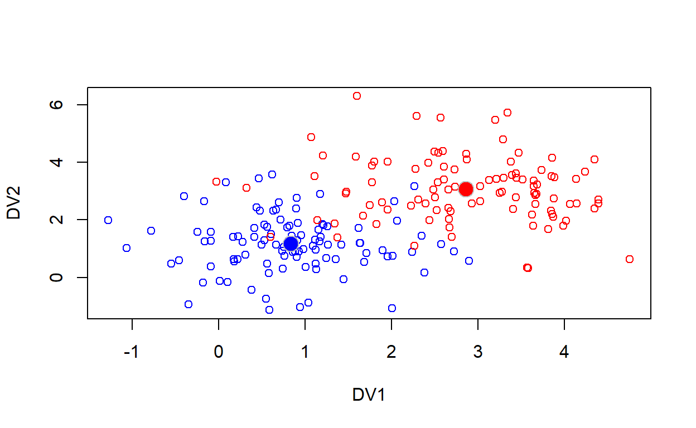

Week 12: Multivariate models & principal components analysis
ANTH 674: Research Design and Analysis in Anthropology
Professor Andrew Du
Introduction
Thus far, we have learned only about models where there is one dependent variable (DV) involved (i.e., univariate statistics). But many times, we have multiple variables we want to model as the DV, or we’re interested in the structure and visualization of our multivariate dataset. These questions are addressed in the branch of statistics known as multivariate statistics.

This tutorial will teach you multivariate statistics in two main parts:
- Fitting and interpreting multivariate models, where there is more than one DV and one categorical independent variable (IV).
- Condensing multiple variables into fewer important composite variables for visualization purposes (i.e., ordination).
I rarely see multivariate models in (biological) anthropology, but ordination is extremely common, especially principal components analysis. This tutorial will teach you how to execute these multivariate methods in R, focusing on continuous variables only. By the end of this tutorial, you should be able to conduct basic multivariate statistics for your own research, if your research questions demand it.
Goals for this tutorial
1) Continue the never-ending journey of familiarizing yourself with R.
2) Learn what multivariate models and their advantages are.
3) Learn how to fit multivariate models with one categorical independent variable (i.e., Hotelling’s T2 and MANOVA).
4) Learn what a principal components analysis (PCA) is and what it does.
5) Learn how to fit a PCA to data in R.
6) Learn how to extract eigenvalues and eigenvectors from a multivariate dataset and understand what their roles are in PCA.
Multivariate models
Multivariate models are those where more than one DV are modeled as a function of one or more IVs. I will illustrate why we would want to do this with an example. Imagine I’m interested in how skull morphology varies across certain groups of humans. I’ve taken a bunch of linear measurements, connecting osteometric points on each skull (see figure below). Instead of testing each linear measurement separately as a function of group, I can analyze all linear measurements together, which is a true test of overall skull morphology as a function of group (it also means less P-values calculated!). That is, fitting a multivariate model instead of multiple univariate models asks a different research question!

The main advantage of multivariate models is that they can account for the correlation between DVs, which may reveal differences between groups that are undetectable when using univariate methods to analyze each DV separately. This tutorial will cover only those multivariate models where multiple DVs are modeled as a function of one categorical IV. Next week’s lecture and tutorial will briefly cover multivariate models with a continuous IV.
Multivariate normal distributions
NB: I didn’t really cover this topic in class, so feel free to skim this section (it’s not necessary to complete the exercises or HW).
Multivariate models assume that the dependent variables are multivariate normally distributed. That is, each variable is normally distributed and possibly correlated with each other. Let’s illustrate this concept by simulating a multivariate normal distribution, focusing on two variables for simplicity’s and visualization’s sake (i.e., the bivariate normal distribution).
A bivariate normal distribution is an extension of the univariate normal to two variables. Whereas the univariate normal distribution has a single mean and SD (or its square: variance), the bivariate normal distribution has a vector of two means (one for each variable) and a variance-covariance matrix. The variance-covariance matrix for a bivariate normal distribution is a 2x2 square matrix, where each diagonal element is the variance for one of the variable’s normal distributions (these two numbers can be different), and the off-diagonal elements are the covariance between the two variables (the off-diagonal elements must be the same). The covariance is basically an unstandardized correlation (a correlation is standardized to be between -1 and 1).

Gray squares and the diagonal elements, while red squares are the off-diagonal elements.
I have provided code in the console below for simulating a bivariate
normal distribution. Each variable will have 100 data points, a mean of
1, and a variance of 2. The zeroes in the off-diagonals mean that the
two variables are uncorrelated. Go ahead and run the code (see what the
output bivar_norm is and why plot(bivar_norm)
works).
n <- 100
means <- c(1, 1)
varcov <- matrix(c(2, 0,
0, 2), byrow = TRUE, nrow = 2)
bivar_norm <- rmvnorm(n, mean = means, sigma = varcov)
plot(bivar_norm)Try plotting histograms of each of the variables separately (they should be normally distributed). Does the mean of each variable closely match our prespecified number (i.e., 1)? What about the variance for each variable? If you increase the diagonal elements, the variance of each variable should increase (and vice versa). If the off-diagonals are non-zero, the variables will be correlated (positive off-diagonals will generate a positive correlation, while negative off-diagonals will create negative correlations). Go ahead and try out different values for the means, variances, and covariances.
In the next topic, we will conduct a Hotelling’s T2 test on data simulated from a bivariate normal distribution.
Hotelling’s T2
Hotelling’s T2 models more than one DV as a function of one categorical IV with two levels (i.e., the IV is binomial). It is the multivariate extension of the t-test. Whereas the t-test tests if two groups’ means are significantly different, Hotelling’s T2 tests if two groups’ centroids are significantly different. A centroid is a measure of central tendency for more than one variable. It can be thought of as the central tendency of a cloud of points in n dimensions, where n is the number of variables involved. It is calculated simply as the mean of each variable, which gives its coordinates.
I have simulated two DVs for you (using the code from the previous
topic), and they are saved as two columns in the matrix,
bivar_norm. Go ahead and calculate the centroid of the two
variables. You can create a scatter plot of the two DVs against each
other with plot(bivar_norm), and then add the centroid to
the plot using points().
n <- 100
means <- c(1, 1)
varcov <- matrix(c(2, 0,
0, 2), byrow = TRUE, nrow = 2)
set.seed(100)
bivar_norm <- rmvnorm(n, mean = means, sigma = varcov)
set.seed(100)
gp1 <- rmvnorm(100, mean = c(1, 1))
gp2 <- rmvnorm(100, mean = c(3, 3))
d <- data.frame(rbind(gp1, gp2), grp = rep(1:2, each = 100))
colnames(d)[1:2] <- c("DV1", "DV2")# Click "Solution" button if stuck# centroid
centroid <- colMeans(bivar_norm)
plot(bivar_norm)
points(centroid[1], centroid[2], pch = 16, col = "red", cex = 2)
# Hotelling's T2
anova(manova(as.matrix(d[, c("DV1", "DV2")]) ~ d$grp))
anova(manova(cbind(d$DV1, d$DV2) ~ d$grp)) # also works if you use cbind() to create the matrixNow let’s conduct a Hotelling’s T2 on the data in
the plot below. There are two groups (grp), each of which
has two DVs (DV1, DV2). The two groups are
represented by different colors, with centroids as solid points. The
data are found in the dataframe, d.

We use Hotelling’s T2 to assess whether the two
groups’ centroids are significantly different by modeling the two DVs as
a function of the binomial IV. First recall that an ANOVA done on two
groups (i.e., a binomial IV) is the same as a t-test. This also applies
to multivariate models, so we can use the manova() function
to conduct a Hotelling’s T2 test.
manova() uses formula notation, where the DV must be a
matrix, whose columns are the individual variables. Wrap
anova() around the manova() function to get
the ANOVA table.
As you can see, the two groups’ centroids are significantly different (the P-value of interest is the one associated with the categorical IV). The test statistic used for calculating the P-value is Pillai’s trace, which is fairly forgiving when it comes to the assumption of multivariate normality.
Multivariate analysis of variance (MANOVA)
A multivariate analysis of variance (MANOVA) is the multivariate extension of an ANOVA: it model multiple DVs as a function of one or more categorical IVs. We will specifically look at a one-way MANOVA, which models multiple DVs as a function of one categorical IV.
For this topic, we will analyze the example I looked at in class: we
have two DVs, which are student satisfaction (Satisfaction)
and test scores (Test), as a function of one categorical
IV, which is three different teaching methods (Method). The
data are found in the dataframe, teach, and are plotted
below (triangles represent centroids).

We will specifically analyze this dataset to see how multivariate models can reveal differences between groups that are undetected using multiple univariate models. This is because multivariate models incorporate information on the relationships between DVs when determining whether groups’ centroids are significantly different (the same is true of Hotelling’s T2 vs. a t-test).
man_url <- RCurl::getURL("https://raw.githubusercontent.com/andrewdu1/ANTH674/master/Datasets/MANOVA_example.csv")
teach <- read.csv(text = man_url)First, run two separate one-way ANOVAs, each testing whether student satisfaction or test scores are significantly different across teaching methods (you can create boxplots to visualize the data).
# Click "Solution" button if stuck# ANOVAs
anova(aov(Satisfaction ~ Method, data = teach))
anova(aov(Test ~ Method, data = teach))
# MANOVA
anova(manova(as.matrix(teach[, c("Test", "Satisfaction")]) ~ teach$Method))
anova(manova(cbind(teach$Test, teach$Satisfaction) ~ teach$Method)) # also worksAs you can see, neither of the one-way ANOVAs are significant (though
this is likely due to small sample sizes, as Test looks
like it varies across Method according to a box plot).
Now use manova() to run a one-way MANOVA with the DVs
Test and Satisfaction as a function of
Method. Wrap anova() around
manova() to get the ANOVA table and P-value. We now have a
significant result! This result illustrates that MANOVAs have greater
statistical power and are able to detect smaller effects than individual
univariate ANOVAs. You can think of this as MANOVA incorporating and
leveraging more information (i.e., the correlation between DVs) than
ANOVAs. Indeed, you can see in the plot that the diagonal ellipse of
blue points is separate from the red and black points when the DVs are
plotted against each other in two dimensions.
Exercise 1
We will analyze the iris dataset for these
questions.
I wonder if overall petal morphology (i.e., length and width) is significantly different between the
setosaandversicolorspecies. First plotPetal.Widthas a function ofPetal.Lengthand color code the points bySpecies. Then plot the centroids for eachSpecies. Finally, run a Hotelling’s T2 to test if the centroids of the two petal variables are significantly different betweensetosaandversicolor.Run a one-way MANOVA testing if the centroids of all four
irismeasurements (Sepal.Length,Sepal.Width,Petal.Length,Petal.Width) are significantly different across all three species. As you can imagine, this would be very difficult to plot.
# Click "Solution" button when done# Q1
iris1 <- iris[iris$Species != "virginica", ] # remove virginica
plot(iris1$Petal.Width ~ iris1$Petal.Length, type = "n")
points(iris1$Petal.Width[iris1$Species == "setosa"] ~ iris1$Petal.Length[iris1$Species == "setosa"], col = "red")
points(iris1$Petal.Width[iris1$Species == "versicolor"] ~ iris1$Petal.Length[iris1$Species == "versicolor"], col = "blue")
points(mean(iris1$Petal.Length[iris1$Species == "setosa"]), mean(iris1$Petal.Width[iris1$Species == "setosa"]), pch = 16, col = "red", cex = 2)
points(mean(iris1$Petal.Length[iris1$Species == "versicolor"]), mean(iris1$Petal.Width[iris1$Species == "versicolor"]), pch = 16, col = "blue", cex = 2)
legend("topleft", c("setosa", "versicolor"), pch = c(16, 16), col = c("red", "blue"))
anova(manova(cbind(Petal.Length, Petal.Width) ~ Species, data = iris1))
# Q2
iris_noSp <- subset(iris, select = -Species)
anova(manova(as.matrix(iris_noSp) ~ iris$Species))Ordination
Ordinations are most commonly used to explore and visualize a
multivariate dataset. The number of variables in one’s dataset dictates
the number of plot axes (e.g., visualizing
iris$Petal.Length and iris$Petal.Width
requires two plot axes). Therefore, it is impossible to plot more than
three variables in a single plot. Ordination allows us to get around
this problem by distilling multiple variables into a smaller number of
important composite variables. It does this by collapsing correlated
variables into one (e.g., because iris$Petal.Length and
iris$Petal.Width are strongly correlated, they offer
redundant information and can be represented by one composite variable).
This is why ordinations are known as data reduction
methods.

Different types of ordinations are used depending on the data type of one’s variables. I will introduce ordination using principal components analysis, by far the most common ordination method, at least in anthropology.
Principal components analysis
Principal components analysis (PCA) is an ordination method, used when all your variables are continuous. Conceptually, it creates composite variables (i.e., principal components or PCs) by first centering the data and then fitting a line through the axis of greatest variation (see animation below). It then rotates the plot so this line (i.e., the first principal component or PC1) is now on the x-axis. Subsequent PCs are fit so that they’re perpendicular (and thus independent) to previous PCs. These subsequent PCs can be thought of as fitting the residual variation left over from previous PCs (this is also why they always explain less variation than previous PCs). Each PC represents a composite of the original variables, and this is how PCA condenses one’s original variables into a few variables of interest (i.e., PCs). Note that you can only have as many PCs as you do variables, but it is usually the case that only the first several PCs are important.

Because PCA works by fitting PCs through axes of greatest variation, more variable variables will strongly influence how PCs are fit to the data. This is fine when the variation in one’s multivariate dataset is of interest itself, but this can be a problem when variables are more variable just because, for example, they’re in different units. Therefore, it is common practice to scale each variable before running a PCA.
Doing a PCA in R
This is done using the prcomp() function. We only need
to enter in one argument, which is the multivariate dataset, where each
variable is a column and each observation is a row. Note that
prcomp() will automatically center each variable for you.
Instead of scaling each variable yourself, prcomp() can do
it for you if you set the argument scale = TRUE.
Let’s try fitting a PCA to the four measurements in the
iris dataset. Because all measurements are all in
centimeters and are of the same order of magnitude, scaling is not
necessary here.
# Click "Solution" button if stuckiris.pca <- prcomp(subset(iris, select = -Species))
plot(iris.pca$x[, 1:2], type = "n")
points(iris.pca$x[iris$Species == "setosa", 1:2], pch = 16) # you can use the iris dataset to get the indices for each species because each row/observation in iris corresponds to each row/observation in iris.pca$x
points(iris.pca$x[iris$Species == "versicolor", 1:2], pch = 16, col = "blue")
points(iris.pca$x[iris$Species == "virginica", 1:2], pch = 16, col = "red")
legend("topright", legend = unique(iris$Species), pch = c(16, 16, 16), col = c("black", "blue", "red"))You can get out the PCA scores (i.e., the
coordinates of each observation in PCA space) with
iris.pca$x (assuming you called your PCA results
iris.pca). Plot the scores of the first two axes in a
scatter plot. You can even color-code the points by species if you want!
Points that are closer in PCA space are more similar when it comes to
petal and sepal morphology (as determined by the four measurements in
iris).
To understand what each PC means and represents, we have to turn to the concepts of eigenvalues and eigenvectors.
Eigenvalues
An eigenvalue is the amount of variance explained by
each PC. Therefore, you have as many eigenvalues as you do PCs. To get
out the eigenvalues from iris.pca, enter
iris.pca$sdev. Note that this code returns eigenvalues as
standard deviations. To get variances, simply square
iris.pca$sdev. Note that variance decreases as you progress
to higher PCs; this is always the case.
# Click "Solution" button if stuckiris.pca <- prcomp(subset(iris, select = -Species))
eigenvalues <- iris.pca$sdev ^ 2
barplot(eigenvalues, ylab = "Variance", names.arg = c("PC1", "PC2", "PC3", "PC4"))
perc_explain <- eigenvalues / sum(eigenvalues) * 100A common way to plot eigenvalues is to create a bar plot. This is known as a scree plot (see image below), which mimics the profile of a mountainside where rubble has fallen (i.e., a scree slope).

Now we can get the percentage of variance in the multivariate dataset explained by each PC. This is done by simply dividing each eigenvalue by the sum of all eigenvalues and then multiplying this by 100. Do this in the console above.
We can see that PC1 explains over 92% of the variation in the data,
and PC2 explains a measly 5%. Therefore, if I were to subsequently
analyze the PCs (e.g., for hypothesis testing), I would just analyze
PC1, which does more than a good job of capturing the variation in the
four iris variables.
Singular value decomposition
NB: This section goes into brief detail about what PCA is actually doing underneath the hood. It is not necessary to know for the exercises or HW.
I explained how PCA conceptually works above, but what it’s actually doing underneath the hood is a singular value decomposition (SVD) of the variance-covariance matrix of the original variables. SVD will return the eigenvalues and eigenvectors (covered in the next topic) from the variance-covariance matrix.
All this is easy to do in R. First, create the variance-covariance
matrix of the dataset by entering
iris.vcov <- cov(subset(iris, select = -Species)). Then,
use the svd() function to do an SVD of the
variance-covariance matrix: iris.svd <- svd(iris.vcov).
iris.svd$d returns the eigenvalues from the SVD for each
PC.
Eigenvectors
Eigenvectors tell us how each PC is related to the
original variables. In this context, eigenvectors are also called
loadings because they tell us how each of the original
variables “loads” on each PC. Loadings range from -1 to 1, where the
sign indicates the direction of the relationship between the variable
and PC, and the magnitude indicates how much each variable contributes
to the PC (also how tightly the two are correlated). For example, a PC1
loading of 0.86 for iris$Petal.Length tells us that as PC1
increases, Petal.Length increases, and vice versa (i.e.,
the two are positively correlated). 0.86 is a large value, indicating
that Petal.Length contributes a lot to and is strongly
correlated with PC1. On the other hand, a PC1 loading of -0.08 for
Sepal.Width indicates that as PC1 increases,
Sepal.Width decreases, and Sepal.Width doesn’t
contribute much to PC1.
To get out the loadings in R, enter iris.pca$rotation.
If you did SVD in the last topic, you can get out the loadings with
iris.svd$u. Note that some of the loading signs might be
switched between iris.pca$rotation and
iris.svd$u. The signs of the loadings are arbitrary and are
a function of how each PC is fit through the data. What is important are
the loading magnitudes and the fact that the directions of loadings for
each PC are internally consistent. For example,
iris.pca$rotation returns PC1 loadings that are positive
for Sepal.Length, Petal.Length, and
Petal.Width and negative for Sepal.Width. This
means that the first three variables are positively correlated with each
other (ignoring the strength of correlation for now) and are each
negatively correlated with Sepal.Width.
iris.svd$u returns PC1 loadings that are negative for
Sepal.Length, Petal.Length, and
Petal.Width and positive for Sepal.Width. As
with iris.pca$rotation, these results tell us
Sepal.Length, Petal.Length, and
Petal.Width are positively correlated with each other, and
each is negatively correlated with Sepal.Width.
One way to graphically portray loadings is as arrows on a PCA scatter
plot. This is easily done in R with the biplot() function,
where the only argument is the PCA results object (e.g.,
biplot(iris.pca)). Try it out above.
As you can see, for example, the arrow for Petal.Length
is long and pointing to the right in an almost horizontal fashion. This
means Petal.Length has a large (long arrow) and positive
loading for PC1 (pointing to the right along the PC1 axis). The arrow
for Sepal.Length is moderately long and points to the
bottom right. This means this variable has a moderate-magnitude loading
that is positive for PC1 (points to the right) and negative for PC2
(points downward). Compare the arrow patterns to the actual loadings to
get a feel for how the arrows graphically portray each variable’s
loading.
Transforming original data to PCA scores
Eigenvectors also tell us how to transform data from the original
variable coordinate system to PCA space and back. Let’s see how this is
done with a specific example, i.e., Plant #1 from the iris
dataset. First, remove Species from iris and
then center each variable, using
scale(iris1, scale = FALSE) (R will apply
scale() to each column in the dataset). Next, subset out
the first row of your new dataset (this is Plant #1). To get out the PC1
score for Plant #1, we multiply each of Plant #1’s measurements by its
corresponding PC1 loading (according to variable), and then sum
everything. That is,
sum(plant1 * iris.pca$rotation[, "PC1"]). Compare the
result to iris.pca$x[1, "PC1"]; they should be the
same.
# Click "Solution" button if stuckiris1 <- subset(iris, select = -Species)
iris.center <- scale(iris1, scale = FALSE)
plant1 <- iris.center[1, ]
iris.pca <- prcomp(iris1)
sum(plant1 * iris.pca$rotation[, "PC1"]) # compare to iris.pca$x[1, 1]This exercise emphasizes how PC loadings are also interpreted as how much each variable contributes to a PC. That is, in this case, the PC1 score for Plant #1 is the sum of of its variables weighted by the PC1 loadings. The larger magnitude the loading, the more that variable contributes to the final PC score.
One can also use matrix algebra to get the PC scores for all
observations and PCs. You do this by multiplying the matrix of centered
iris variables by the matrix of PCA loadings:
iris.center %*% iris.pca$rotation (see pgs. 525-526 in
Gotelli & Ellison to learn how to multiply two matrices
together).
Hypothesis testing with PCA
PCA in itself is not used for hypothesis testing, but the resulting
PCA scores can be used for such purposes. For example, a PCA of the
iris variables shows that PC1 is strongly positively
correlated with Petal.Length, and more moderately
positively correlated with Sepal.Length and
Petal.Width; Sepal.Width does not really
contribute to PC1. Therefore, PC1 is a composite of mostly
Petal.Length and some Sepal.Length and
Petal.Width. We can use an ANOVA to test if this composite
variable is significant different across iris$Species. This
is done by fitting an ANOVA, where PC1 scores is the DV and
Species is the IV. Try this out below.
# Click "Solution" button if stuckanova(aov(iris.pca$x[, "PC1"] ~ iris$Species))As you can see, the means of this composite PC1 variable is
significantly different across Species.
If one had a separately measured IV (e.g., nitrogen levels for each plant), one could model PC1 scores as a function of that. One can also distill collinear IVs using PCA: fit a PCA to the collinear variables and use the PC1 scores as the new composite IV that represents the previous IVs.
Exercise 2
We will analyze the mtcars dataset for the following
questions.
First subset out the continuous variables from
mtcars(i.e.,mpg,disp,hp,drat,wt, andqsec). Next, fit a PCA to the subsetted variables. Should the variables be scaled first?Create a scatter plot for the car models, where the x-axis is PC1 and the y-axis is PC2.
Create a scree plot, showing how much variance is explained by each PC. Then calculate the percentage of variance explained by PC1 and PC2.
Look at the PC1 loadings. Which variables contribute most to PC1 and in what fashion?
# Click "Solution" button when done# Q1
mtcars1 <- subset(mtcars, select = c(mpg, disp, hp, drat, wt, qsec))
mtcars.pca <- prcomp(mtcars1, scale = TRUE) # yes, scale the variables since they're in different units
# Q2
plot(mtcars.pca$x[, c("PC1", "PC2")])
# Q3
eigenvalues <- mtcars.pca$sdev ^ 2
barplot(eigenvalues, ylab = "Variance", names.arg = paste0("PC", 1:6)) # paste0() tells R to concatenate "PC" to each number within 1:6 with no spaces in between
eigenvalues / sum(eigenvalues) * 100 # PC1 explains 70%, and PC2 explains 19%. Together they explain 89%, a good amount of the total variance
# Q4
mtcars.pca$rotation
# no one variable dominates PC1. The most important variables are mpg (negative), disp (positive), hp (positive), and wt (positive). drat is slightly less important and negative. qsec is negative and least important, though its loading is non-negligible Conclusion
This tutorial introduced you to multivariate statistics with multivariate models and ordination. Many research questions require the analysis of a multivariate DV (e.g., the human skull example in Multivariate models). It is better to fit one’s analysis to the research question instead of the other way around (the research question is king!). Sticking with our skull example, we should treat the many linear measurements as a multivariate DV instead of analyzing them separately as univariate DVs (the latter asks a different research question). This is why it is important to have a fundamental understanding of the many statistical methods out there, so you can pick the one most appropriate for your research question.
Multivariate models are used to assess how a multivariate DV varies as a function of one or more IV. This week, we only focused on those multivariate models that have one categorical IV (i.e., Hotelling’s T2 and MANOVA). Next week, we will briefly cover those multivariate models that have a continuous IV. As alluded to in the previous paragraph, multivariate models ask a different research question than multiple univariate models by jointly analyzing multiple DVs together. This also has the advantage of incorporating more information into the analysis (i.e., the correlations between DVs), with the result that multivariate models are able to detect differences that are missed with multiple univariate models (e.g., our teaching method example).
Ordinations are used to condense multiple variables into a few important ones. The main purpose of this is exploratory: ordination allows one to plot many variables in two- or three-dimensional space, while still accounting for most of the variation in one’s multivariate dataset. We went over principal components analysis, by far the most common ordination method, at least in anthropology. PCA is done only on continuous variables. We learned what PCA is doing “underneath the hood”, as well as what all the outputs are and how to interpret them (i.e., scores, eigenvalues, eigenvectors/loadings). PCA can be used for hypothesis testing by treating PC scores as composites of the original variables, which can then be entered as a DV or IV in other models (you can understand how the original variables contribute to each PC using the loadings).
This week’s lecture and tutorial provided you with the basic skillset and know-how for conducting multivariate analyses in R. The hope is that you are now able to carry out multivariate statistics for your own research if your research question requires it.